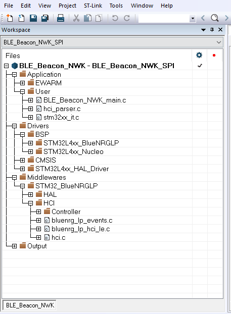
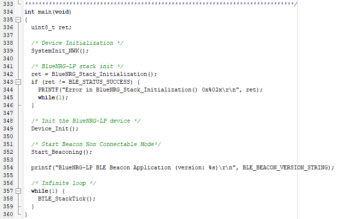

|
BlueNRG-LP network coprocessor (SPI mode)
|
|
BlueNRG-LP network coprocessor (SPI mode)
|
This document describes an example of the BlueNRG-LP/BlueNRG-LPS network coprocessor SPI protocol implementation on a STM32L4xx microcontroller (NUCLEO-L476RG platform).
The SPI network coprocessor framework is implementing according to the specification described on SPI protocol specification html documentation.
The document content is valid for BlueNRG-LP/BlueNRG-LPS devices. The BlueNRG-LP/BlueNRG-LPS device is configured as a network coprocessor (SPI mode).
| Nucleo-L476RG pin/connector (SPI1) | BlueNRG-LP/LPS development platform pin/connector | |
|---|---|---|
| SPI CLOCK | PB3/CN10.31/CN9.4 | PA13 (BlueNRG-LP) |
| SPI MOSI | PA7/CN10.15/CN5.4 | PA15 (BlueNRG-LP) |
| SPI MISO | PA6/CN10.13/CN5.5 | PA14 (BlueNRG-LP) |
| SPI CS | PA1/CN7.30/CN8.2 | PA11 (BlueNRG-LP) |
| SPI IRQ | PA0/CN7.28/CN8.1 | PA10 / BOOT (1) (BlueNRG-LP) |
| SPI CLOCK | PB3/CN10.31/CN9.4 | PA3 (JP3, pin1) (BlueNRG-LPS) (2)(3) |
| SPI MOSI | PA7/CN10.15/CN5.4 | PA11 (BlueNRG-LPS) |
| SPI MISO | PA6/CN10.13/CN5.5 | PA8 (BlueNRG-LPS) |
| SPI CS | PA1/CN7.30/CN8.2 | PA9 (BlueNRG-LPS) |
| SPI IRQ | PA0/CN7.28/CN8.1 | PA10 / BOOT (BlueNRG-LPS) |
| RESETN | PA8/CN10.23/CN9.8 | RESETN (BlueNRG-LP/LPS) |
| VDD | VDD | VBRD (BlueNRG-LP/LPS) |
| GND | GND | GND (BlueNRG-LP/LPS) |
Notes:
Configure the BlueNRG-LP/BlueNRG-LPS device as a network coprocessor (SPI mode), by loading the following binary images (using the "drag and drop" mass storage upgrade capability by selecting the associated BlueNRG-LP/BlueNRG-LPS platform on PC Computer Window):
| Path | Description | |
|---|---|---|
| Nucleo-L476RG SDK Drivers | Drivers\External_micro\BSP\STM32Lxx_Nucleo | SDK Drivers for NUCLEOE-L476RG Leds, COM, timers |
| STM32L4 Nucleo - BlueNRG-LP/BlueNRG-LPS | Drivers\External_micro\BSP\STM32Lxx_BlueNRGLP | NUCLEO-L476RG UART driver for interfacing to BlueNRG-LP/BlueNRG-LPS network co-processor |
| STM32L4 CMSIS | Drivers\External_micro\CMSIS | CMSIS files for STM32LXXX |
| STM32L4 drivers | Drivers\External_micro\STM32L4xx_HAL_Driver | STM32L4xx drivers |
| HAL drivers | Middlewares\ST\External_micro\HAL | HAL drivers (osal, timers, clock) |
| ACI framework | Middlewares\ST\External_micro\SimpleBlueNRG-LP_HCI | Bluetooth LE stack ACI framework APIs for interfacing to the BlueNRG-LP/BlueNRG-LPS Bluetooth LE stack features and events |
| Bluetooth LE Beacon emonstration application | Project\External_micro\BLE_Beacon_NWK | Bluetooth LE application configuring a device as a Bluetooth LE Beacon |
| Bluetooth LE Direct Test Mode application | Project\External_micro\DTM_NWK | Bluetooth LE application allowing to use the BlueNRG GUI PC application (STSW-BRNGUI) |
| Bluetooth LE Sensor Demo application | Project\External_micro\BLE_SensorDemo_NWK | Bluetooth LE demo application interacting with the ST BlueNRG Sensor smartphone app |
| Bluetooth LE Stack, Device Configuration updater application | Project\External_micro\BLE_StackDevConfigUpdater_NWK | Bluetooth LE demo application targeting BLE Stack/Device Configuration updater features |
| Bluetooth LE Serial Port Master and Slave Demo application | Project\External_micro\BLE_SerialPort_MasterSlave_NWK | Bluetooth LE serial communication emulation through Bluetooth LE |

|
| Figure 1: Bluetooth LE Beacon Demo, BLE_Beacon_NWK_SPI configuration example |

|
| Figure 2: Bluetooth LE Beacon Demo, main() Function |
 1.8.10
1.8.10